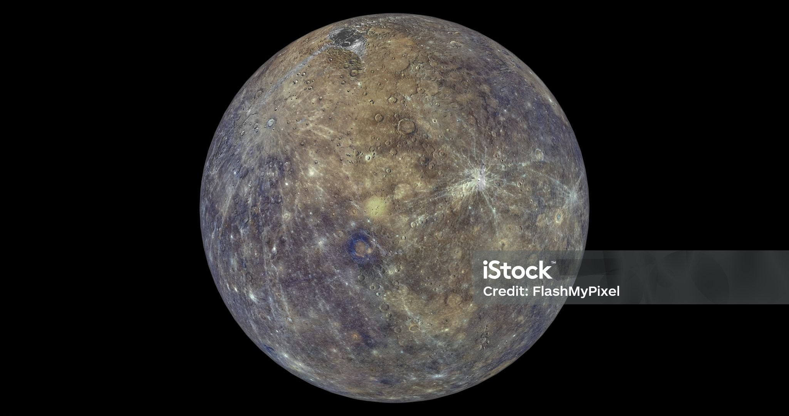
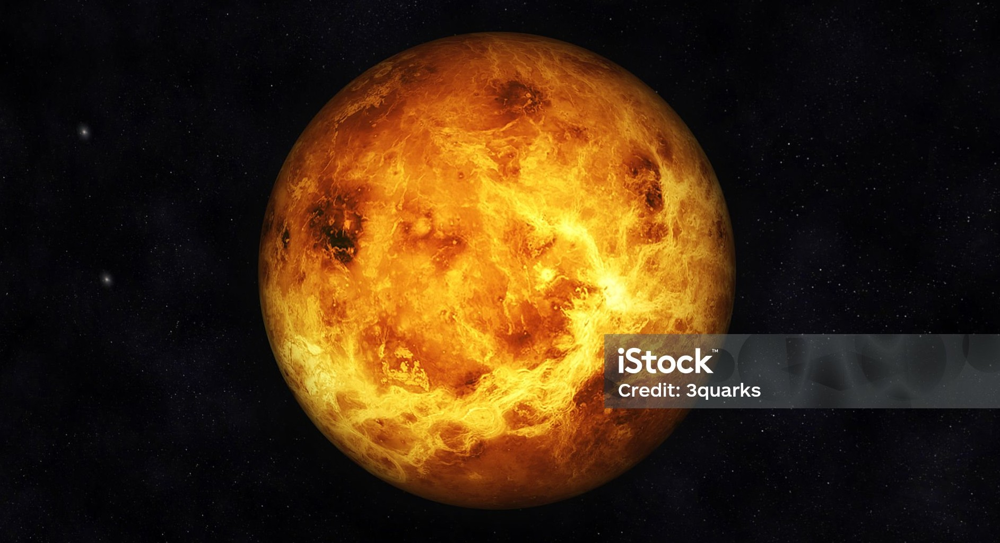
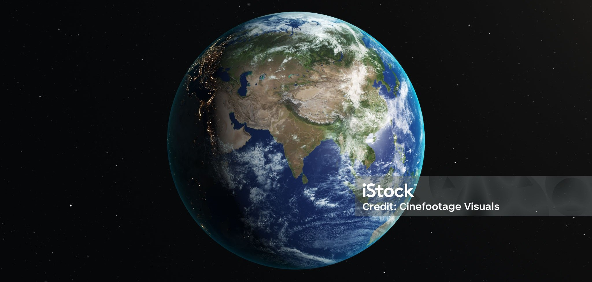
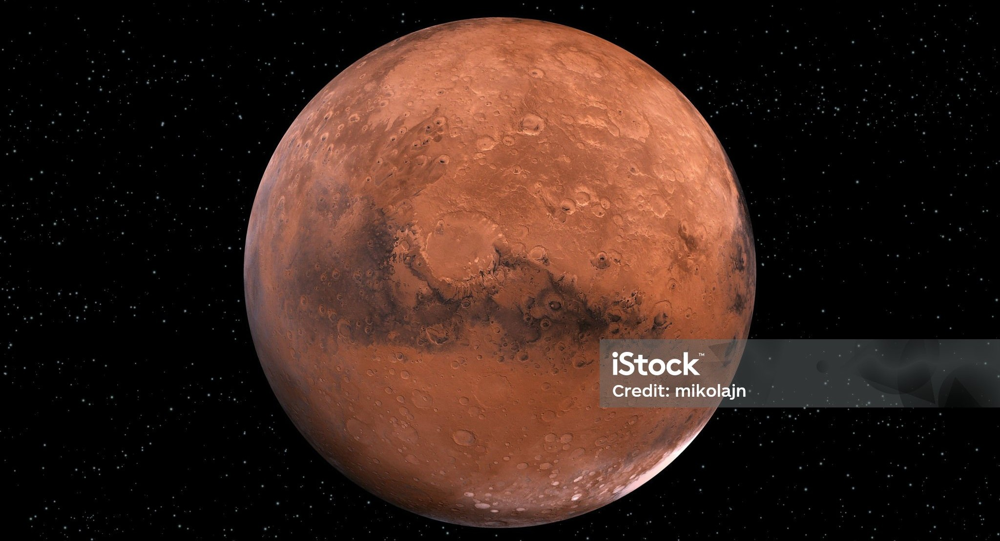
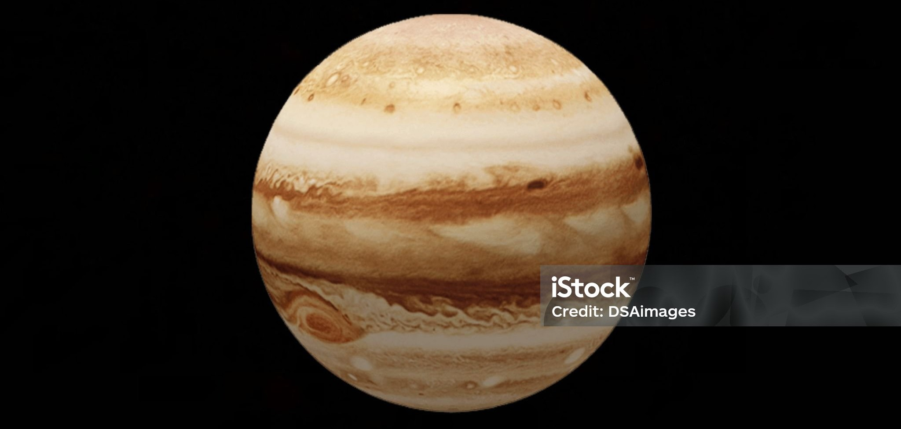
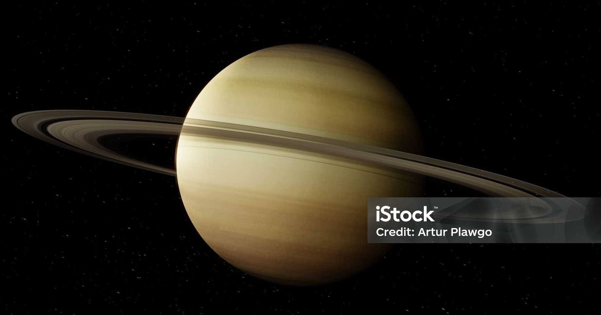
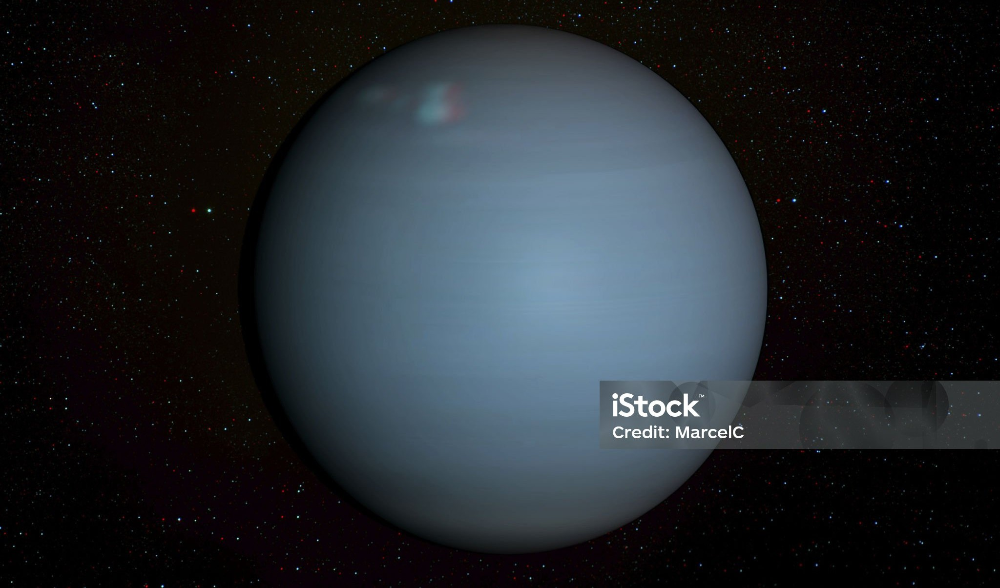
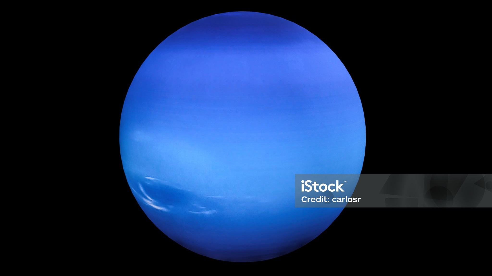

Merkurius

Merkurius adalah planet terdekat dengan Matahari dan yang terkecil di tata surya. Meski sangat panas di siang hari (hingga 430 °C), sisi malamnya bisa turun hingga −180 °C karena atmosfernya sangat tipis. Permukaannya berbatu
dan penuh kawah, menyerupai Bulan. Planet ini tidak memiliki satelit atau cincin.
Venus

Venus adalah planet kedua dari Matahari dan sering disebut "kembaran Bumi" karena ukurannya hampir sama. Namun kondisi ekstrem: atmosfer tebal berisi CO₂, suhu permukaannya mencapai sekitar 465 °C, serta tekanan atmosfer sangat
tinggi. Planet ini memiliki rotasi mundur dan atmosfer paling panas di antara planet.
Bumi

Bumi adalah planet ketiga dan satu‑satunya tempat yang diketahui memiliki kehidupan. Dengan atmosfer kaya nitrogen dan oksigen serta keadaan air cair, Bumi mendukung berbagai ekosistem. Bumi memiliki satu satelit
alami—Bulan—serta medan magnet pelindung yang menjaga dari radiasi kosmik.
Mars

Mars, planet keempat dan kerap disebut planet merah, memiliki permukaan berbatu dan atmosfer tipis yang sebagian besar terdiri dari CO₂. Meskipun suhunya ekstrem (antara −133 °C sampai +20 °C), Mars terus menjadi fokus
eksplorasi dengan misi seperti Perseverance dan Curiosity. Planet ini memiliki dua satelit kecil: Phobos dan Deimos.
Jupiter

Jupiter adalah planet terbesar di tata surya, terdiri hampir sepenuhnya dari gas hidrogen dan helium. Dengan diameter sekitar 11 kali Bumi dan massa lebih besar dari gabungan semua planet lain, Jupiter memiliki lebih dari 95
satelit, termasuk Ganymede—bulan terbesar. Atmosfernya terkenal dengan Great Red Spot, badai raksasa yang telah berlangsung selama ratusan tahun.
Saturnus

Saturnus dikenal dengan cincin es besar yang mengelilinginya. Planet ini memiliki massa sekitar 95 kali Bumi, namun densitas sangat rendah. Suhunya bisa mencapai −134 K (−139 °C). Saturnus memiliki puluhan satelit, dengan Titan
sebagai yang terbesar.
Uranus

Uranus adalah planet biru kehijauan yang dikenal dengan aksial tilt ekstrem (sekitar 82°), sehingga musimnya berlangsung bertahun‑tahun lamanya. Gas atmosfernya terutama hidrogen, helium, dan sejumlah besar metana dan belerang,
yang memberi bau khas—seperti telur busuk!
Neptunus

Neptunus merupakan planet terjauh dan dikenal dengan angin tercepat di tata surya—hingga 2.100 km/jam. Atmosfernya banyak metana, memberi warna biru tua. Voyager 2 menjadi satu-satunya pesawat yang pernah mengunjunginya,
menemukan fitur seperti Great Dark Spot dan Triton, bulan raksasanya yang mungkin aktif secara geologi.